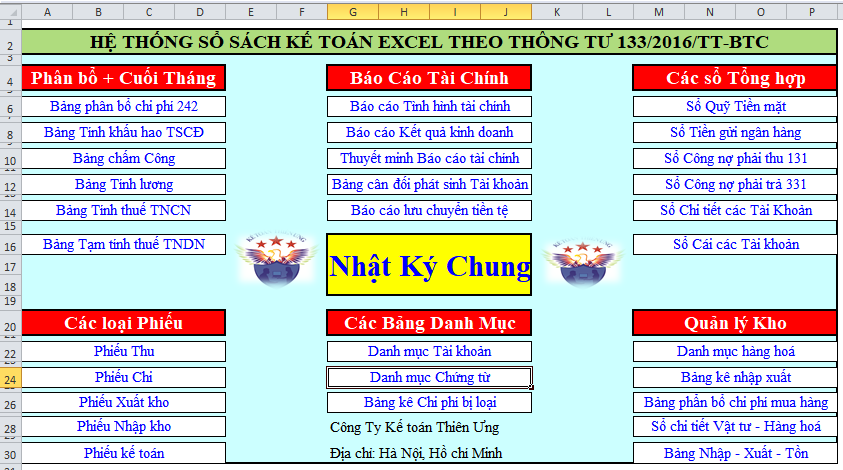
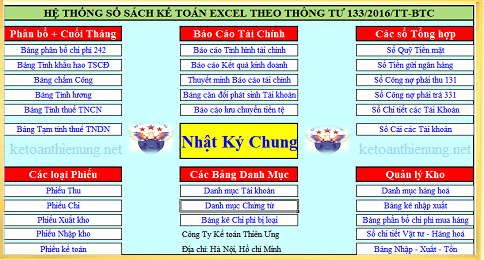

Kế toán Diệu Tâm xin chia sẻ 2 Mẫu sổ sách theo Thông tư 133 và file kế toán Excel theo Thông tư 200 mới nhất; Download mẫu sổ sách Excel theo Thông tư 133 và 200 (phần mềm kế toán Excel) miễn phí tại đây:
Hình ảnh Mẫu sổ sách kế toán Excel theo Thông tư 133:

- Đây có thể coi như là 1 phần mềm kế toán Excel miễn phí, rất thuận lợi cho các bạn kế toán và Doanh nghiệp, các bạn chỉ cần học cách sử dụng các hàm để link các sổ lại với nha, từ đó có thể lên các sổ, rồi lên báo cáo tài chính trên Excel.
- Bởi vì: 2 Mẫu sổ sách kế toán Excel này bao gồm đầy đủ các loại chứng từ, sổ sách và báo cáo như: Phiếu thu, chi, xuất kho nhập kho, nhập xuất tồn, Sổ chi tiết Tài khoản, Các số cái, Bảng cân đối kế toán (Báo cáo tình hình tài chính), Báo cáo kết quả hoạt động kinh doanh, Báo cáo lưu chuyển tiền tệ, Thuyết minh báo cáo tài chính theo Thông tư 133 và Thông tư 200 nên các bạn yên tâm có thể làm tất cả các công việc kế toán trên đây mà không cần dùng đến phần mềm kế toán.
Từ Bảng sơ đồ chính các bạn có thể link đến toàn bộ các sổ, báo cáo và chứng từ như sau:
- Sổ Nhật Ký Chung
- Bảng phân bổ TK 242
- Bảng Khấu hao TSCĐ 214
- Bảng châm công, bảng tính lương, tính thuế TNCN
- Bảng tạm tính thuế TNDN.
- Sổ quỹ Tiền mặt
- Sổ tiền gửi Ngân hàng
- Sổ tổng hợp công nợ Phải thu TK 131
- Sổ tổng hợp công nợ Phải trả TK 331
- Sổ chi tiết các tài khoản
- Sổ cái các tài khoản
- Danh mục hàng hóa
- Bảng kê Nhập xuất
- Bảng tổng hợp Nhập - Xuất - Tồn
- Bảng phân bổ chi phí mua hàng
- Các loại phiếu như: Phiếu thu, chi, Phiếu nhập kho, xuất kho, phiếu kế toán.
- Báo cáo tình hình tài chính (Bảng cân đối kế toán)
- Báo cáo Kết quả hoạt động kinh doanh.
- Báo cáo Lưu chuyển tiền tệ trực tiếp
- Bản thuyết minh báo cáo tài chính.
- Bảng cân đối số phát sinh tài khoản.
- Tờ khai quyết toán thuế TNDN (Mẫu 03/TNDN)
- Phụ lục 03-1A/TNDN (BCKQKD)
- Phụ lục 03-2A/TNDN (Chuyển lỗ)
---------------------------------------------------------------------------
Tải Mẫu sổ sách kế toán theo Thông tư 200 và Thông tư 133 tại đây:
- Mẫu sổ sách kế toán Excel theo Thông tư 133:
- Mẫu sổ sách kế toán Excel theo Thông tư 200:
- Nếu bạn không tải về được thì có thể làm theo cách sau:
Bước 1: Để lại mail ở phần bình luận bên dưới
Bước 2: Gửi yêu cầu vào mail: ketoandieutam@gmail.com (Tiêu đề ghi rõ Tài liệu muốn tải)
Để hiểu rõ hơn và chi tiết hơn về việc sử dụng các hàm, cách thiết lập sổ sách và cách lập báo cáo tài chính trên Excel .... các bạn xem thêm tại đây: Cách làm sổ sách kế toán trên Excel
--------------------------------------------------------------------------------------------------
Các bạn muốn học thực hành làm kế toán trên Excel, thực hành thiết lập sổ sách, xử lý các nghiệp vụ hạch toán, tính lương, trích khấu hao....lập Báo cáo tài chính trên Excel thì có thể tham gia:
-> Lớp học excel kế toán thực tế tại Kế toán Diệu Tâm
__________________________________________________
